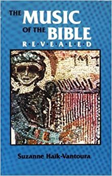
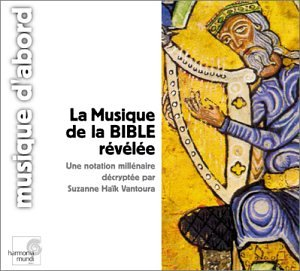
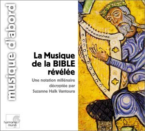

From Wikipedia, the free encyclopedia on Suzanne Haïk-Vantoura
"Music of the Bible Revealed" was her magnum opus; a massive work covering the entire Hebrew Bible, decoding the cantillation marks (as musical notes which support the syntax and meaning of the words) of its 24 books, to music.
From Wikipedia, the free encyclopedia on Suzanne Haïk-Vantoura
"Music of the Bible Revealed" was her magnum opus; a massive work covering the entire Hebrew Bible, decoding the cantillation marks (as musical notes which support the syntax and meaning of the words) of its 24 books, to music.
Study
Noticing the marks in the version of the Hebrew Bible she used to read, Vantoura affirmed she had read in an unnamed encyclopedia that these signs of cantillation dated back to antiquity and that their real musical meaning was lost. This, she said, triggered her curiosity. Working step by step, she made the assumption it was significant that the sublinear signs were never absent from the text, while entire verses are totally lacking supralinear signs. In her opinion it had to mean that the sublinear signs had to be "more important" than the supralinear ones. This conclusion formed the basis of her conjectures. She focused on the prose te'amim system only. That system comprises 8 sublinear signs. She made the hypothesis that it corresponded to the eight degrees of a musical scale, particularly of a tonal scale, (the diatonic scale - C, D, E, etc. - being the oldest). In her mind that was supported by the nearly systematic writing of a vertical sign at the end of each verse. This sign, she assumed, could work like an end note, and could be used to indicate the main note (tonic) of a scale. As she worked with each verse she became convinced that the notes of her transcription formed coherent melodies and not random sounds.[clarification needed] By comparing individual verses she then compiled tables of concordant sequences. Analyzing the shapes of signs, she finally assigned conjectural values to the 8 sublinear signs of the prose system, suggesting that they are the 8 notes of a scale.
In 1978 the Institut de France awarded the second edition of Haik-Vantoura's French book the Prix Bernier, its highest award. Encyclopaedia Universalis, a French online encyclopedia, presents her work as a firmly scientifically established conclusion.
 מאתר וויקיפדיה סוזן הייק ונטורה
מאתר וויקיפדיה סוזן הייק ונטורה

The Music Bible Revealed - English Translation
 

La Musique de la BIBLE revelee - Original French Edition